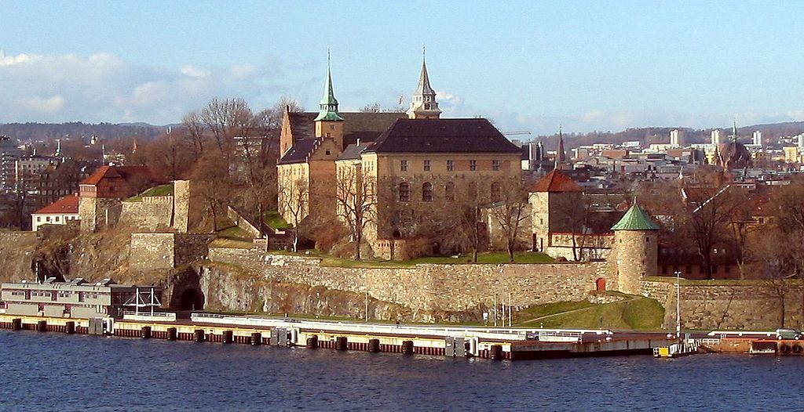
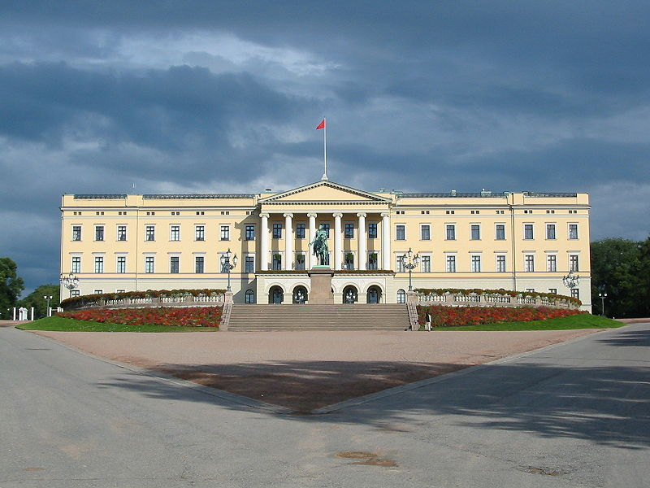
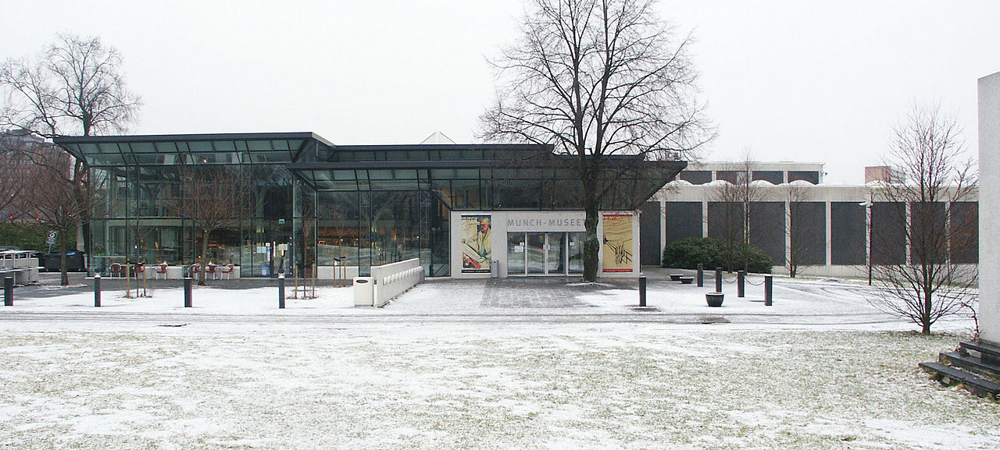
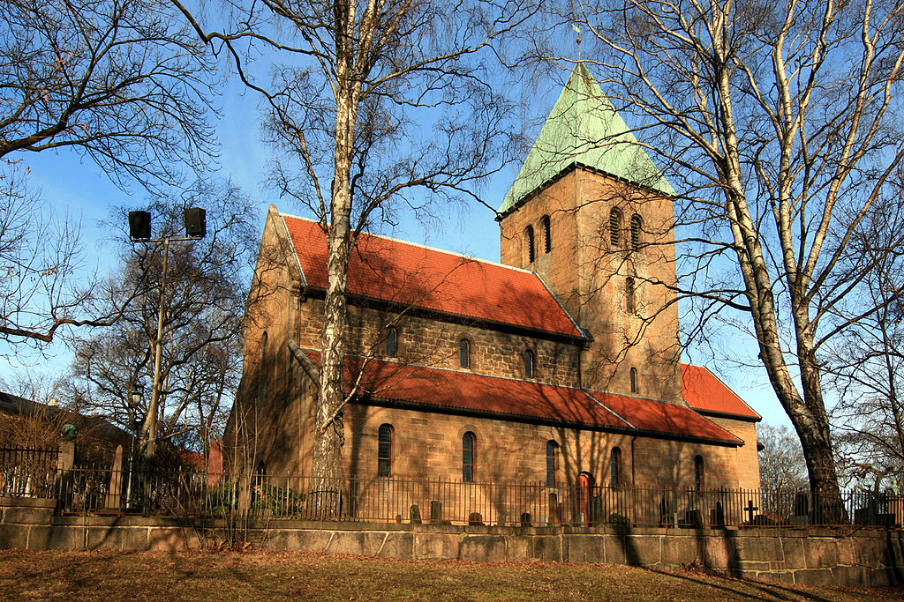
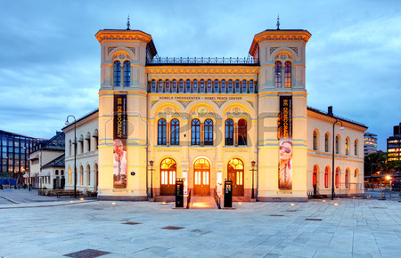
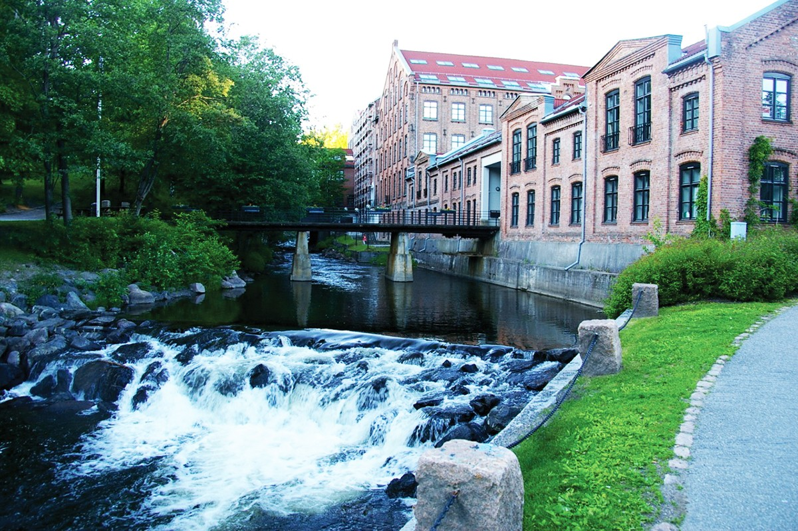
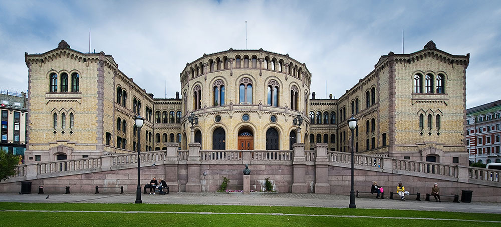
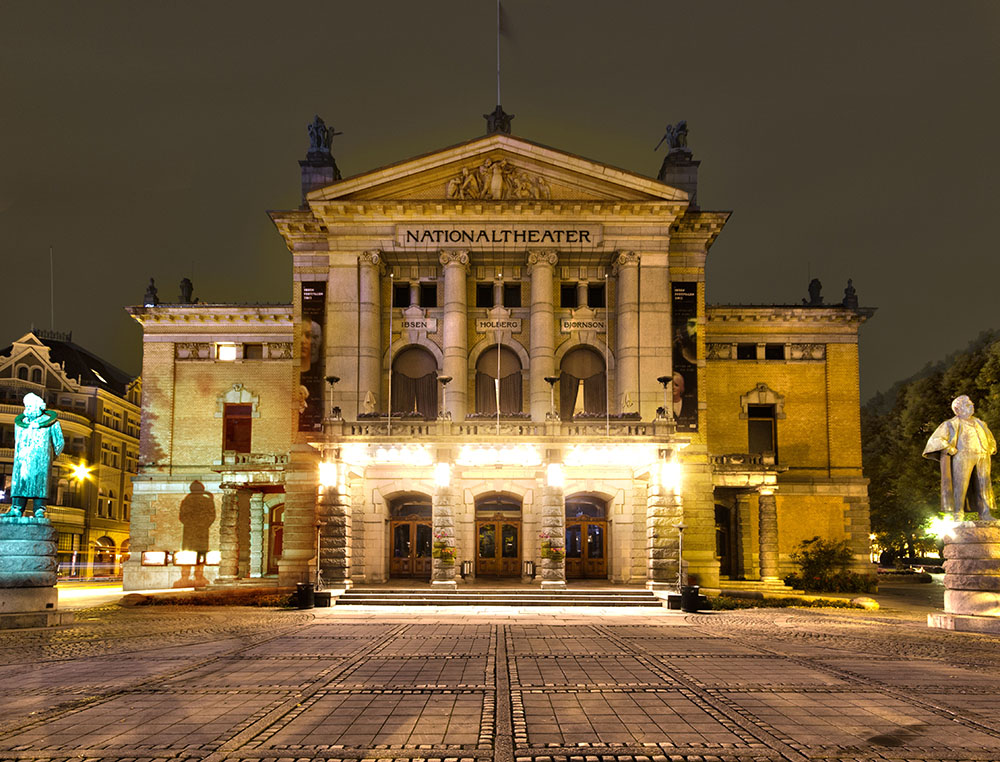

Akershus Festning

Akerhus festning sett fra Oslofjorden.
Adresse: 0103 OSLO. Akerhus festning er en av de viktigste festningene i Norges historie, og er i dag sett på som et nasjonal symbol. Akerhus festning ble bygget som en midelaldersk kongeborg i 1299. På 1600-tallet ble den bygget om til et renessanseslott omgitt av en bastionfestning. Borgen, som senere ble Akershus festning, ble et avgjørende forsvarsverk for Norge gjennom flere epoker. I over fire hundre år motstod den beleiringer og angrep på landets styre.
lukk
Slottet

bildet er av slottet.
Adresse: Slottsplassen 1, 0010 Oslo. Det kongelige slott i Oslo er der den norske kongefamilien bor. Slottsparken omgir palasset på alle sider og funksjoner grasområder, majestetiske trær, små dammer og statuer. Deler av slottet er åpent for publikum i sommermånedene. Fra øst løper paradegaten Karl Johans gate rett mot Slottets hovedfasade og er den formelle adkomst til Slottet ved høytidelige anledninger.Hver nasjonaldag siden 17. mai 1906 har den norske kongefamilien stått på slottsbalkongen og hilst osloskolenes elever i barnetoget som marsjerer over Slottsplassen.
lukk
Munch Museet

Munchmuseet på Tøyen i Oslo. Arkitekt Einar Myklebust og Gunnar Fougner.
Adresse: Tøyengata 53, 0578 Oslo. Munchmuseet er et kunstmuseum i Oslo som inneholder Edvard Munchs etterlatte arbeider som han testamenterte til Oslo kommune i 1940. Museet åpnet dørene for publikum i 1963, hundre år etter maleren og grafikerens fødsel. Bildet finnes i fire originalversjoner, hvorav to tilhører Munch-museet, ett Nasjonalgalleriet har og det siste ble auksjonert bort til en ukjent kjøper i 2012. “Skrik” er et av Edvard Munchs mest berømte bilder, og en av Norges sentrale kunstskatter.
lukk
Aker Kirke

Den har adresse Akersbakken 26 og ligger ved Telthusbakken, for enden av Akersveien, og er i dag sognekirke for Gamle Aker menighet.
Gamle Aker kirke er den eldste byggningen i Oslo. Aker kirke er nevnt i 1080 som fylkeskirke for Vingulmark. Oslo Byleksikon mener at dette er dagens kirke, og at den kan være bygd av kong Olav Kyrre. Andre kilder daterer kirken til første del av 1100-tallet. Stilhistoriske kriterier tilsier at dagens Gamle Aker kirke ble påbegynt tidligst på begynnelsen av 1100-tallet. Kirken det vises til i 1080 var etter alt å dømme en trekirke som sto på stedet før dagens kirke ble reist.
lukk
Nobels Fredssenter

Senteret er plassert på Rådhusplassen i Oslo, i hovedbygningen for den gamle Vestbanestasjonen.
Adresse: Brynjulf Bulls plass 1, 0250 Oslo. Nobels Fredssenter er museet om Nobels fredspris. De faste utstillingene forteller historien om Alfred Nobel og om fredsprisvinnerne og deres engasjerende og banebrytende arbeid. Nobels Fredssenter sine skiftende utstillinger gir innsikt i aktuelle temaer knyttet til krig, fred og konfliktløsning, ofte presentert på nye og overraskende måter. Gjennom utstillinger, omvisninger, arrangementer og familieaktiviteter er de et sted for refleksjon, debatt og engasjement.
lukk
Akerselva

Akerselva har i senere tid blitt en attraksjon hvor man kan gå og se den vakre elva. Man kan oppleve norsk natur midt i Oslo.
Akerselva er en kjent elv som renner gjennom Oslo. Elva er 8,2 km lang og har et fall på 149 meter. Akerselva har hatt en rik flora og vært en lakseelv, men i 2011 var det et klor utslipp som drepte nesten alt livet i elva.
lukk
Stortinget

Bildet er av Stortinget
Addresse: Stortinget, 0026 Oslo - Er Norges nasjonalforsamling . Selve byggningen sto ferdigstilt og åpnet i år 1866, og er idag en av de mest karakteristiske bygningene i landet, som symboliserer uavhengighet og frihet.Etter mye frem og tilbake om hvem skulle stå bak konstruksjonen av stortingsbygningen ble det i år 1856 vedtatt at teningene til den svenske arkitekten Emil Victor Langlet som skulle få æren.
lukk
Operahuset

Bildet er av Operahuset
Addresse: Den Norske Opera og Ballett Kirsten Flagstads pl. 1 N-0150 Oslo
Operahuset er sentralisert og ligger i Bjørvika og ble åpnet i 2008 og er tegnet av arkitet firmamet snøhetta, som blant annet ble kåret og vant prisen "Verdens kulturbygg" for operahuset på World Architecture Festival. Operahuset har tre scener der en av senene har den største lysekronen i Norge. Dette er er Norges største musikk-og scenekunstinstitusjon og i tillegg er det verdt å nevne at dette er det første operahuset i verden hvor man kan gå på taket. Med ca 1 million besøkende mennesker årlig, gjør dette til en av Oslos mest besøkte turistmål
lukk
Nationaltheatret

Bildet er av Nationaltheatret
Addresse: Johanne Dybwads plass 1, 0161 Oslo
I over 100 år har dette vært landets hovedscene og ble åpnet 1 september 1899. Dette er et arena for teaterstykker, storslåtte markeringer og masse annet tradisjonelt og nyskapende. Etter løsrivelesen fra Sverige startet Norge med nasjonalbygging, og selvsalgt hadde Nordmenn et ønske om å ha noe norsk innen teater for dramatikerer og scenekunstere. Henrik bull var arkitekten bak nationaltheatret, vi finner både Bjørnson og Ibsen’s skulputer utenfor nationaltheatret for å vise at dette var noe norsk og vi her til lands kan være stolte av.
lukk
Karl Johan

Bildet er av Karl Johan
Addresse: Johanne Dybwads plass 1, 0161 Oslo
I over 100 år har dette vært landets hovedscene og ble åpnet 1 september 1899. Dette er et arena for teaterstykker, storslåtte markeringer og masse annet tradisjonelt og nyskapende. Etter løsrivelesen fra Sverige startet Norge med nasjonalbygging, og selvsalgt hadde Nordmenn et ønske om å ha noe norsk innen teater for dramatikerer og scenekunstere. Henrik bull var arkitekten bak nationaltheatret, vi finner både Bjørnson og Ibsen’s skulputer utenfor nationaltheatret for å vise at dette var noe norsk og vi her til lands kan være stolte av.
lukk